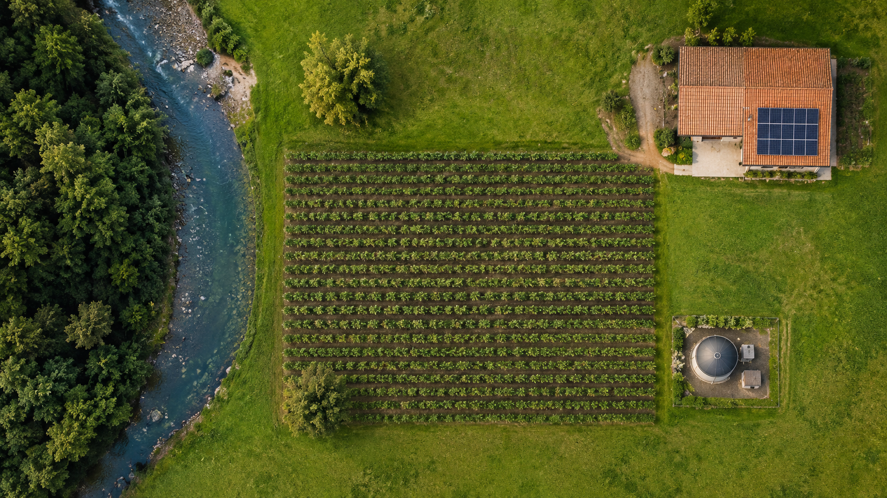

O campo precisa produzir
O Brasil é um dos maiores produtores de alimentos do mundo. A agricultura gera alimentos, empregos e riqueza para toda a sociedade.
Agrinho 2026 | 1º Ano do Ensino Médio
Projeto desenvolvido para mostrar que o campo
pode produzir alimentos, gerar desenvolvimento e cuidar do meio ambiente
com tecnologia, conhecimento e responsabilidade.
O desafio do nosso tempo
O maior desafio do agronegócio moderno é encontrar o equilíbrio entre aumentar a produção e preservar o meio ambiente para as próximas gerações.
O Brasil é um dos maiores produtores de alimentos do mundo. A agricultura gera alimentos, empregos e riqueza para toda a sociedade.
Água, solo, matas e biodiversidade são recursos essenciais que, se destruídos, comprometem o futuro da própria produção e da vida no planeta.
Com tecnologia, planejamento e consciência ambiental, é possível produzir mais, gastar menos e preservar os recursos naturais.
A solução"O futuro do agro não está em escolher entre produzir ou preservar, mas em aprender a fazer as duas coisas ao mesmo tempo."
Boas práticas no campo
Algumas práticas ajudam o produtor rural a cuidar melhor do solo, da água, da energia e da biodiversidade, tornando o agro mais forte e sustentável.
Com o plantio direto, a rotação de culturas e a cobertura do solo, o produtor reduz a erosão em até 90%, conserva nutrientes e melhora a produtividade safra após safra. (EMBRAPA)
Com sensores de umidade no solo, o produtor irriga somente quando a planta precisa, reduzindo o consumo de água em até 50% e os custos com energia. (EMBRAPA)
Placas solares e biodigestores podem reduzir a conta de energia em até 80%, aproveitam resíduos da produção e diminuem emissões de carbono no campo. (Absolar / EMBRAPA)
Matas ciliares, áreas de preservação e diversidade de espécies ajudam a manter o equilíbrio ambiental e protegem a própria produção rural.
Mapa interativo
Clique nos pontos do mapa e descubra cada elemento de uma fazenda que produz e preserva ao mesmo tempo.

👆 Toque em qualquer ponto para conhecer sua função na fazenda
O agro em números
Juventude e futuro
A nova geração pode unir estudo, criatividade e tecnologia para construir um agro mais produtivo, justo e sustentável.
Clique nos cards para abrir os detalhes de cada tópico.
"Meu avô plantava olhando o céu. Eu planto olhando o tablet. Mas o amor pela terra é o mesmo."
— Lucas, 17 anos, jovem produtor rural do Paraná
Simulador interativo
Selecione as práticas que você usaria na sua propriedade e veja seu índice de sustentabilidade crescer em tempo real.
Selecione práticas ao lado para calcular seu índice.
Teste seus conhecimentos
Responda às 8 perguntas e veja como atitudes conscientes ajudam o campo e o meio ambiente.
O projeto "Agro Forte: Produzir Preservando" mostra que o agronegócio pode ser moderno, produtivo e sustentável. Por meio da tecnologia, do cuidado com o solo, da preservação da água e da participação dos jovens, é possível construir um campo mais eficiente e responsável com o futuro.